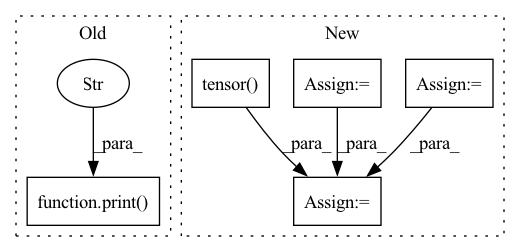

Pattern ID :23307

Before Change
self.backprop_count += 1
def collect_rollout_step(self, rollouts):
print("new rollout step")
// sample actions
with torch.no_grad():
step_observation = {
k: v[rollouts.step].to(self.device)
After Change
and self.teacher_forcing(self.rollout_count) > 0
):
tf_mask_shape = step_observation["expert_action"].shape[:-1] + (1,)
expert_actions = (
step_observation["expert_action"].view(-1, 2)[:, 0].view(*tf_mask_shape)
)
expert_action_exists_mask = (
step_observation["expert_action"].view(-1, 2)[:, 1].view(*tf_mask_shape)
)
teacher_forcing_mask = (
torch.distributions.bernoulli.Bernoulli(
torch.tensor(self.teacher_forcing(self.rollout_count))
)
.sample(tf_mask_shape)
.long()
.to(self.device)
) * expert_action_exists_mask
actions = (
teacher_forcing_mask * expert_actions
+ (1 - teacher_forcing_mask) * actions
)
In pattern: SUPERPATTERN
Frequency: 3
Non-data size: 5
Instances
Fragment ID: 73470129
Project Name: allenai/allenact
Commit Name: 8e313465b05e6546339b02ea73bc1ded059bab14
Time: 2020-01-20
Author: lucaw@allenai.org
File Name: onpolicy_sync/trainer.py
M Class Name: Trainer
N Class Name: Trainer
M Method Name: collect_rollout_step(2)
N Method Name: collect_rollout_step(2)
M Parent Class:
N Parent Class:
M File Name: onpolicy_sync/trainer.py
N File Name: onpolicy_sync/trainer.py
M Start Line: 168
M End Line: 194
N Start Line: 184
N End Line: 213
'>
Before Change
optimizer = optim.Adam(train_params, lr=self.poison_lr)
criterion = nn.CrossEntropyLoss()
print("fine-tuning")
self.model.cuda()
loss, n_sample = 0.0, 0
self.model.train()
After Change
param.requires_grad = True
yt_num = len(self.yt_labels)
ynt_num = len(self.ynt_labels)
all_num = yt_num + ynt_num
fine_tune_inds = np.random.choice(list(range(all_num)),
int(all_num*self.fine_tune_set_ratio),
replace=False)
fine_tune_imgs = torch.tensor(self.yt_imgs.tolist()+self.ynt_imgs.tolist())[fine_tune_inds]
fine_tune_labels = torch.tensor(self.yt_labels.tolist()+self.ynt_labels.tolist())[fine_tune_inds]
// only update last layer parameters
optimizer = optim.Adam(train_params, lr=self.poison_lr)
'>
Fragment ID: 73470121
Project Name: ain-soph/trojanzoo
Commit Name: e1fa2f5536d966e225a2d40eddb80b9725daca34
Time: 2020-06-27
Author: zxx5113@lrs-twang01.ist.psu.edu
File Name: trojanzoo/attack/backdoor/latent_backdoor.py
M Class Name: Latent_Backdoor
N Class Name: Latent_Backdoor
M Method Name: student_fine_tuning(1)
N Method Name: student_fine_tuning(1)
M Parent Class: BadNet
N Parent Class: BadNet
M File Name: trojanzoo/attack/backdoor/latent_backdoor.py
N File Name: trojanzoo/attack/backdoor/latent_backdoor.py
M Start Line: 231
M End Line: 249
N Start Line: 248
N End Line: 269
'>
Before Change
optimizer.step()
losses.append(loss.item())
print("step:", step, "loss:", loss.item())
print("finished training")
return losses
def main():
After Change
optimizer.zero_grad()
// Build batched input.
input_arrays = []
for _ in range(myconfig.BATCH_SIZE):
anchor, pos, neg = feature_extraction.get_triplet_features_trimmed(
spk_to_utts)
input_arrays += [anchor.transpose(), pos.transpose(),
neg.transpose()]
batch_input = torch.from_numpy(np.stack(input_arrays)).float()
// Compute loss.
batch_output = encoder(batch_input)[:, -1, :]
loss = torch.tensor(0.0)
for batch in range(myconfig.BATCH_SIZE):
loss += my_triplet(
batch_output[batch * 3, :],
batch_output[batch * 3 + 1, :],
batch_output[batch * 3 + 2, :])
'>
Fragment ID: 73470120
Project Name: wq2012/speakerrecognitionfromscratch
Commit Name: 5851b0d7a32e7c84558b0f09be2ab28c0552f9e6
Time: 2022-05-07
Author: quanw@google.com
File Name: neural_net.py
M Class Name: AnonimousClass
N Class Name: AnonimousClass
M Method Name: train_network(2)
N Method Name: train_network(1)
M Parent Class:
N Parent Class:
M File Name: neural_net.py
N File Name: neural_net.py
M Start Line: 37
M End Line: 63
N Start Line: 40
N End Line: 81